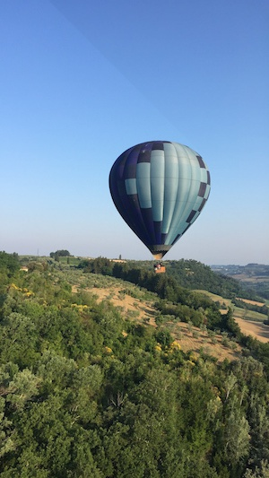
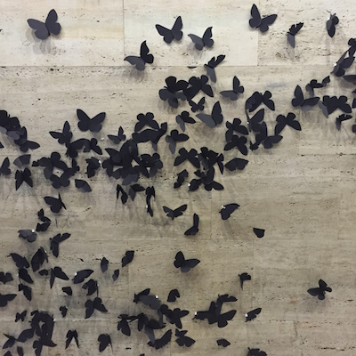

Project 2: Seam Carving
By Alejandrina Patron Lopez
Seam carving is an algorithm used for "content-aware image resizing," as described by
Shai Avidan and Ariel Shamir.
It follows a series of steps that can be repeated to reduce an image's width or height. I was motivated to do this project
because I wanted to learn how an image resizing algorithm worked, especially one that considers the importance of
pixels in an image. The algorithm for reducing an image's width is the following:
Step 1: Energy Map
In order to crop an image using a “content aware” process, we need to remove pixels with “low energy” and keep pixels with “high energy.”
To construct the energy map of an image, the following energy function must be computed: e(I) = |dI/dx| + |dI/dy|. This energy function is
essentially adding the absolute values of the image’s derivative at x and at y.
Step 2: Accumulated Cost Matrix
In order to find the pixels with less importance in the image, we need to construct an accumulated cost matrix of the energy map obtained in the last step. This can be achieved with the following formula:
M(i, j) = e(i, j) + min(M(i -1, j-1), M(i-1, j), M(i-1,j+1)).
Step 3: Minimum Seam
The minimum seam is obtained by iterating from the bottom row to the top row of the accumulated cost matrix.
We first start by finding the smallest pixel in the last row of the matrix, which will indicate the end of the
minimum seam. After this, we repeat the process for every row up to the top, making sure each pixel in the seam is a neighbor of the pixel below it. The coordinates of each pixel in the seam are recorded so they can be removed
from the original image in the next step.

Step 4: Remove Seam
In this last step, the pixels at the minimum seam coordinates obtained in step 3 are removed from the original image.
Steps 1 through 4 can be repeated to remove the desired amount of pixels from the image.
Click here to see the code.
Here is some example output that I got reducing each image's width by 100 pixels (photos taken by me):
| Input |
Output |
 |
 |
| |
| |
|
| |
| |
|
| |
| |
|
| |
|  |
|